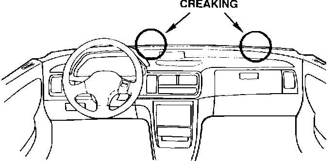
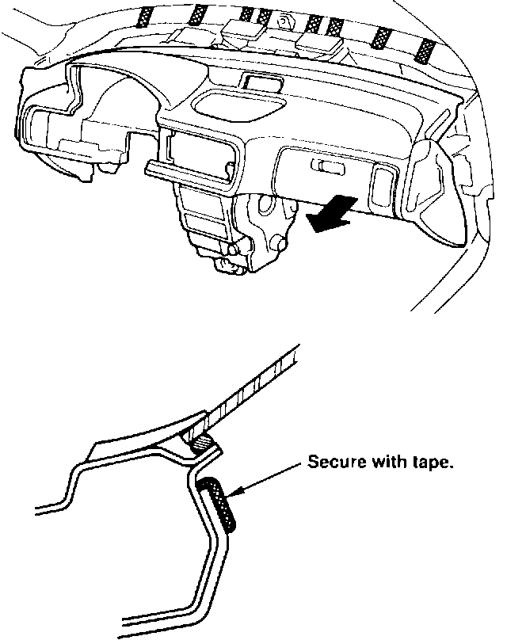
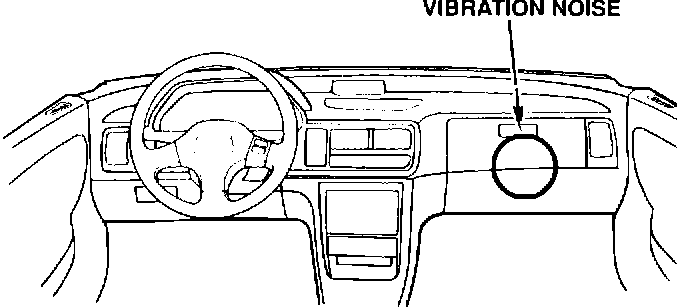
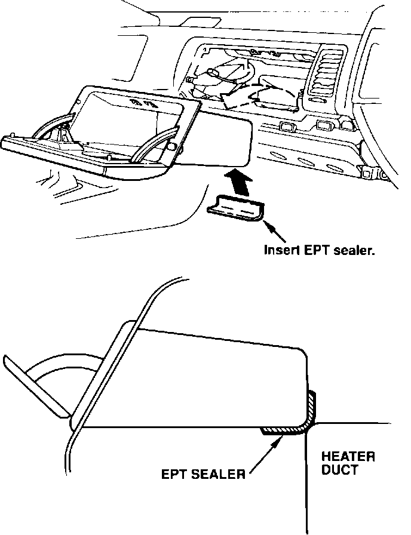
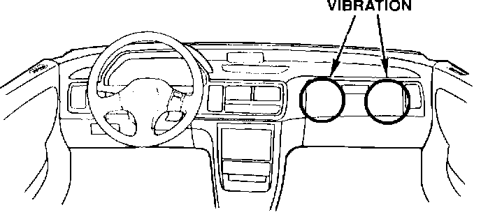
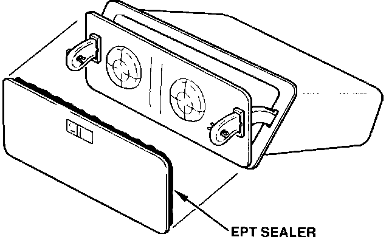
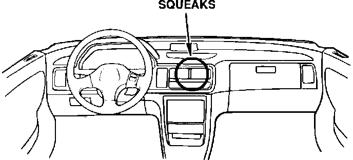
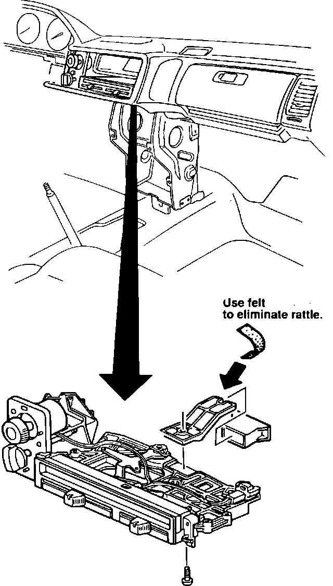

Dashboard

To pinpoint the noise source while the car is parked:
^ Press and release the dashboard and the steering wheel in several spots, and listen.
^ Gradually raise the engine rpm, and listen from both the driver and passenger seats for noise produced by engine vibration.
Dashboard Panel Creaks
Symptom: Creaking from inside the dashboard when driving over rough roads.
Source: A detached dashboard insulator mounting clip is hitting the dashboard.

Corrective Action: Lower the dashboard and apply Felt Wool (P/N 06993-SA5-000) to the insulator and plastic clip areas.
WARRANTY CLAIM INFORMATION
Operation number: 841090
Flat rate time: 3.8 hours
Failed P/N: 61100-SK7-A00ZZ
Defect code: 045
Contention code: B07

DASHBOARD
To pinpoint the noise source while the car is parked:
^ Press and release the dashboard and the steering wheel in several spots, and listen.
^ Gradually raise the engine rpm, and listen from both the driver and passenger seats for noise produced by engine vibration.
Heating Duct Vibrates
Symptoms: Vibration heard from the center of the dashboard area when driving over rough roads.
Source: The heater duct and the bottom of the glove box are rubbing together.

Corrective Action: Remove the glove box assembly and apply EPT (P/N 06990-SA5-000) where indicated.
WARRANTY CLAIM INFORMATION
Operation number: 841091
Flat rate time: 0.4 hours
Failed P/N: 79810-SK7-A01
Defect code: 045
Contention code: B07

DASHBOARD
To pinpoint the noise source while the car is parked:
^ Press and release the dashboard and the steering wheel in several spots, and listen.
^ Gradually raise the engine rpm, and listen from both the driver and passenger seats for noise produced by engine vibration.
Glove Box Area Vibrates
Symptom: Vibration from the glove box when driving over rough asphalt roads.
Source: Rattling or vibrating from the door stay.

Corrective Action: Apply EPT (P/N 06990-SA5-000) to the glove box opening and lid.
WARRANTY CLAIM INFORMATION
Operation number: 841050
Flat rate time: 0.4 hours
Failed P/N: 77501-SK7-A02
Defect code: 045
Contention code: B07

DASHBOARD
To pinpoint the noise source while the car is parked:
Press and release the dashboard and the steering wheel in several spots, and listen.
Gradually raise the engine rpm, and listen from both the driver and passenger seats for noise produced by engine vibration.
Heater Control Unit Squeaks
Symptom: Squeaks from deep inside the heater panel when entering a driveway or going over large bumps.
Source: Friction between the heater unit holder and the control unit stay.

Corrective Action:
1. Working from under the dash, remove the self-tapping screw from the boftom of the heater control unit.
2. Pull out the control unit stay, wrap Felt (P/N 06993-SA5-000) around the end and reinstall the control unit stay.
WARRANTY CLAIM INFORMATION
Operation number: 610040
Flat rate time: 2.3 hours
Failed P/N: 79510-SK7-A00
Defect code: 043
Contention code: B07